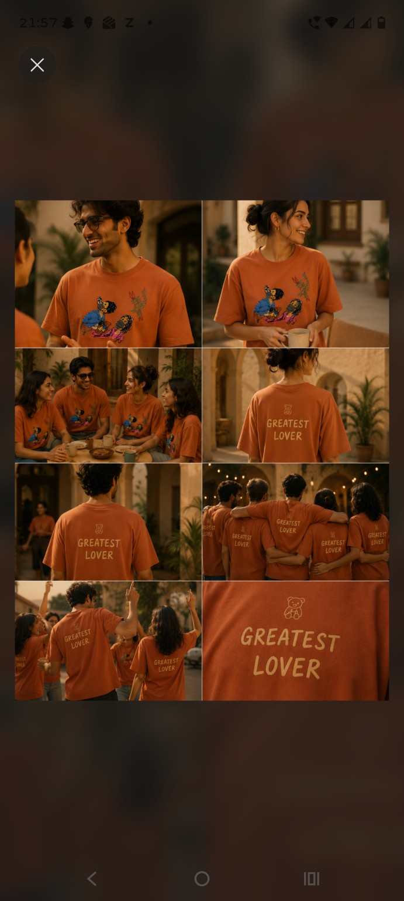
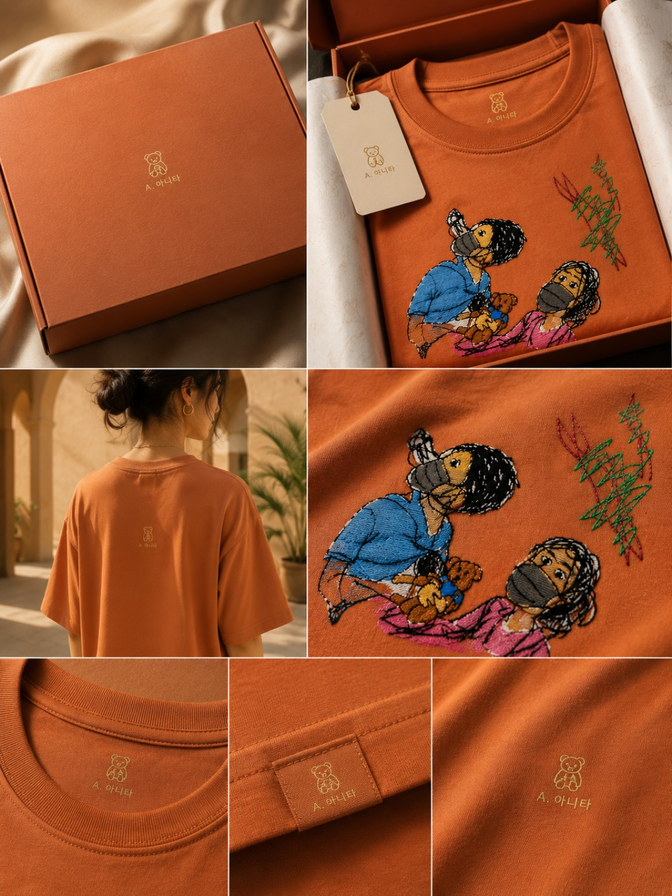
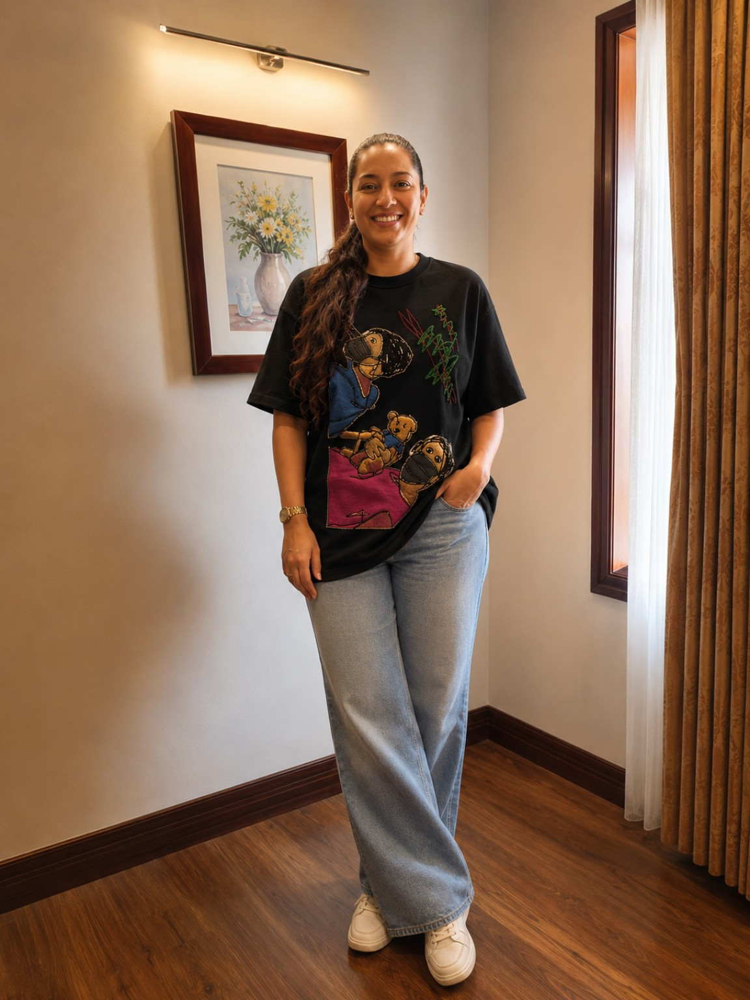
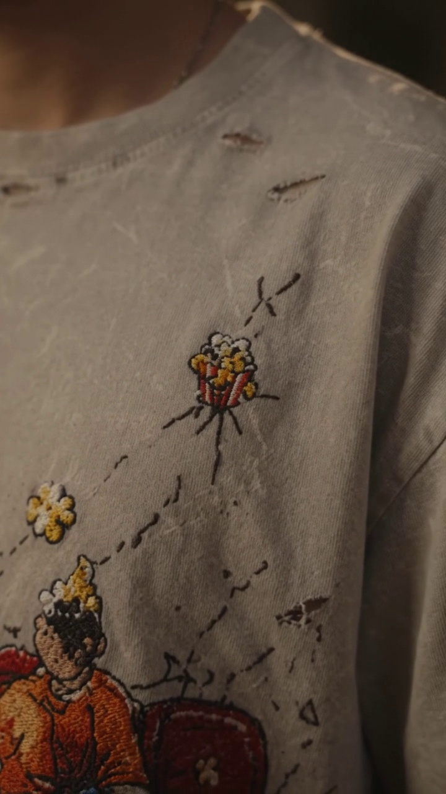
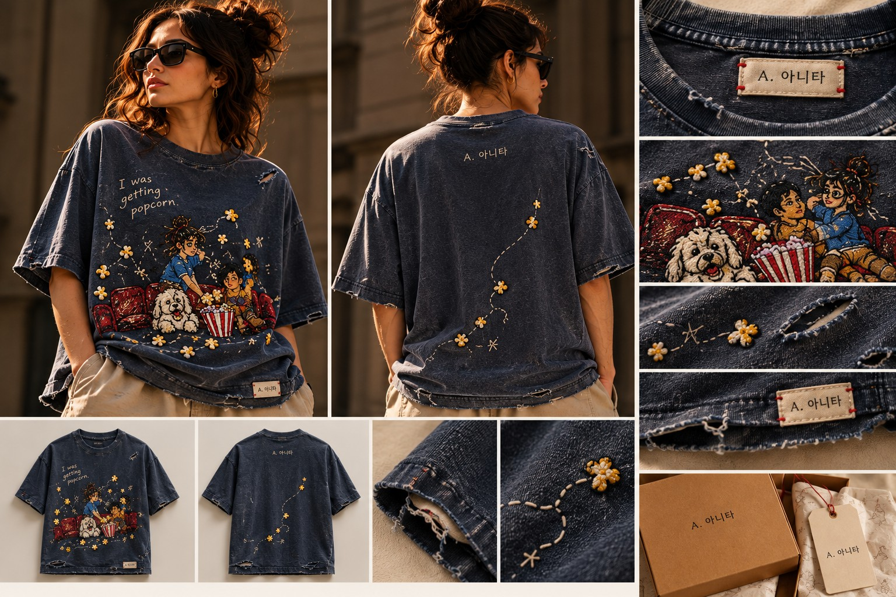
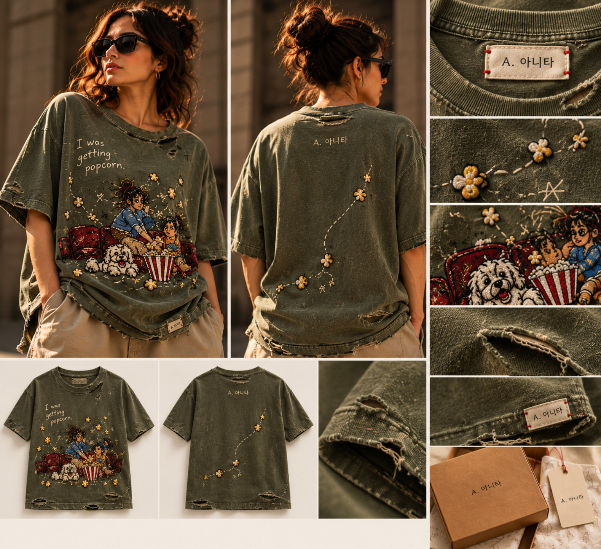
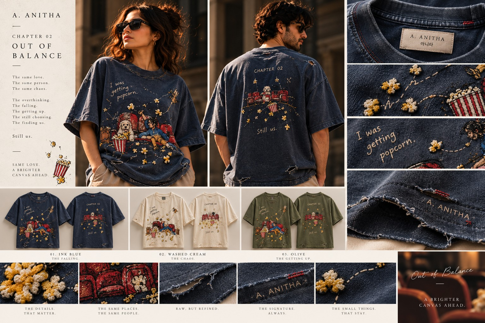
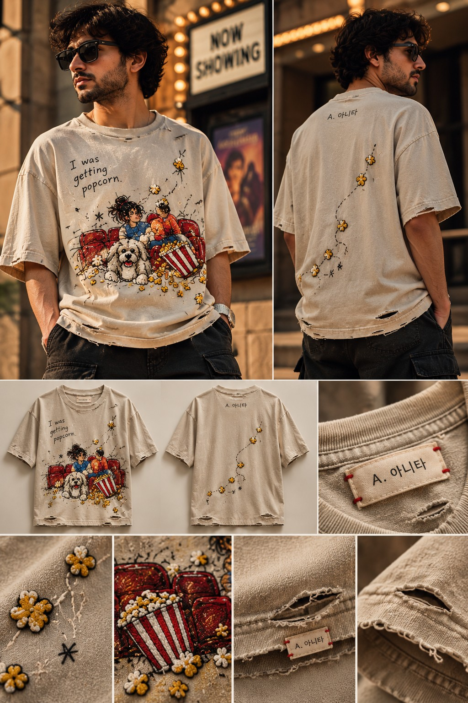

A. 아니타 / WEARABLE CHAPTERS
Not made
for everyone.
Real moments become chapters. The chapter opens when the story is ready.
Enter the story ↓THE IDEA
Some things happen once.
We turn them into chapters.
A. 아니타 turns real moments into wearable chapters — imperfect, personal and made to be discovered rather than explained.
CHAPTER 01
Greatest Lover
01 / ORIGIN
Five hours
in the rain.
She didn't answer. I stayed. Hours later, one question turned an ordinary night into the first A. Anitha chapter.
“Are you the greatest lover?”
THE FIRST CHAPTER


BETWEEN CHAPTERS
We thought
that was the story.
It was only the first chapter.
CHAPTER 02
The first time
we met.
I went to get popcorn for her.
And I fell.

THE CLUE
I was just
getting popcorn.
It was awkward. A little ridiculous. Completely real.
And somehow, that tiny moment became the next chapter.
02
OUT OF
BALANCE
Sometimes you don't plan the moment that becomes the story.
THE NEW EDITION
Out of Balance




THE ARCHIVE
Previous
chapters.
ABOUT THE FOUNDER
Ananya
Mohapatra.
CEO & Founder, A. 아니타
I have always believed that the things we choose to wear can carry something much bigger than a logo. They can carry a feeling, a memory, a message — something that makes another person stop and ask, “What is the story behind this?”
That belief became A. 아니타. I wanted to build an Indian brand that does not have to follow the usual rules of fashion — where everything is available all the time, across every platform, simply because it can be.
Instead, I am building A. 아니타 around stories, editions and moments. Each campaign has a reason to exist. Each edition has a beginning and an end. And the people who become part of it are part of that story.
For me, this is not just about creating something people can buy. It is about creating something people want to belong to — and building it patiently, with a clear point of view.
CEO & FOUNDER / A. 아니타